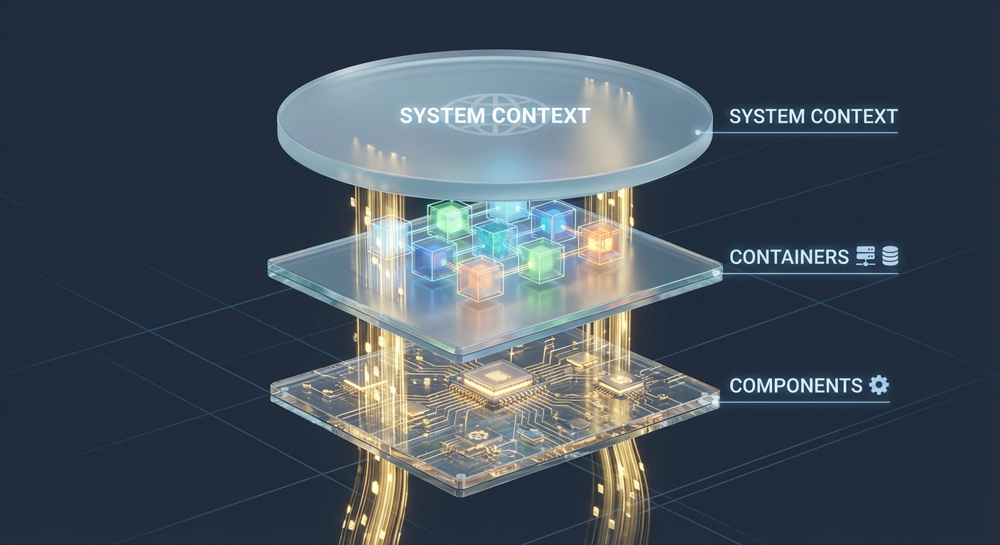
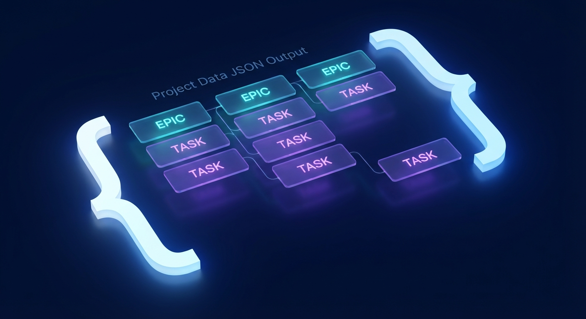

Software Design Architect
Transform abstract system descriptions into production-ready technical specifications. Generate comprehensive architecture diagrams (C4), data models (ERD), test plans, and agile project structures automatically using Mermaid syntax and structured JSON.
Capabilities
C4 Architecture
Generates System Context, Container, and Component diagrams using Mermaid syntax to visualize system topology.
Data Modeling
Creates Entity-Relationship Diagrams (ERD) and data dictionaries, defining schemas, keys, and relationships.
Requirements Spec
Defines Functional (FR) and Non-Functional (NFR) requirements, prioritized via MoSCoW method with traceability.
Project Planning
Outputs structured JSON containing Epics, User Stories, Sprints, and Releases calculated based on velocity.
Flow Diagrams
Maps critical user journeys and complex logic using Sequence and Activity diagrams.
Test Strategy
Generates comprehensive test plans, including unit, integration, and acceptance test cases.
Interactive Simulator
Configure the design parameters to generate a mock specification.
Software Design Document
Project: Cognotik Analytics Platform
Status: Draft
1. Executive Summary
The Cognotik Analytics Platform is designed to handle high-throughput event ingestion...
2. Scope
- ✅ Real-time data ingestion
- ✅ Stream processing pipeline
- ✅ User dashboard
graph TB
User[User] --> LB[Load Balancer]
LB --> API[API Service]
API --> Kafka[Kafka Stream]
Kafka --> Worker[Stream Worker]
Worker --> DB[(ClickHouse)]{
"project_name": "Cognotik Analytics Platform",
"epics": [
{
"id": "EPIC-ARCH",
"name": "Architecture Setup",
"priority": "High",
"story_points": 21
}
],
"sprints": [
{
"id": "SPRINT-1",
"goals": ["Setup Infra", "Core API"],
"capacity": 40
}
]
}How It Works
Context Analysis
The agent analyzes your description, input files, and constraints to understand the domain.

Structural Design
Generates architectural patterns (C4) and data schemas (ERD) best suited for the requirements.

Project Breakdown
Decomposes the design into Epics, Stories, and Tasks, assigning them to Sprints.
Use Cases
🚀 Project Kickoff
Rapidly generate a "Strawman" architecture and backlog to jumpstart a new development team.
📄 Technical Specs
Create formal documentation for stakeholders, ensuring all non-functional requirements are addressed.
📅 Sprint Planning
Automatically populate your issue tracker (Jira/Linear) via the generated Project Data JSON.
🤝 Onboarding
Provide new developers with a clear map of the system, data flows, and architectural decisions.